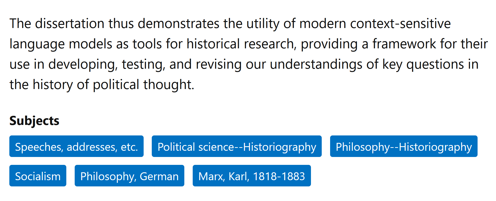
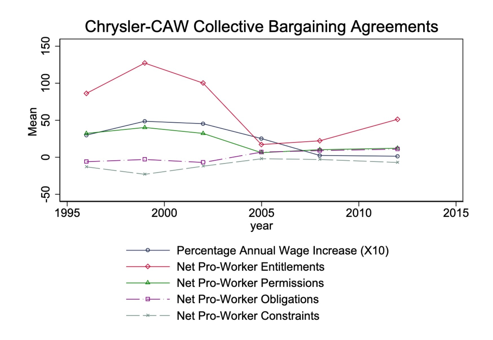

About Me
Miscellaneous
Prof. Jeff Introduction!
- Born and raised in NW DC → high school in Rockville, MD
- University of Maryland: Computer Science, Math, Economics (2008-2012)

Grad School
- Studied abroad in Beijing (Peking University/北大) → internship with Huawei in Hong Kong (HKUST)
- Stanford for MS in Computer Science (2012-2014)
- Research Economist at UC Berkeley (2014-2015)

- Columbia (NYC) for PhD[+Postdoc] in Political Science (2015-2023)
Dissertation (Political Science + History)
“Our Word is Our Weapon”: Text-Analyzing Wars of Ideas from the French Revolution to the First Intifada

Research (Labor Economics)
- “Monopsony in Online Labor Markets”: Machine Learning to enhance causal estimates of the effect of job description language on uptake rate
- “Freedom as Non-Domination in the Labor Market”: Game-theoretic models of workers’ rights (monopsony vs. labor discipline)
- “Unsupervised Extraction of Workplace Rights and Duties from Collective Bargaining Agreements”: Linguistic (dependency) parses of contracts → time series of worker vs. employer rights and responsibilities over time
